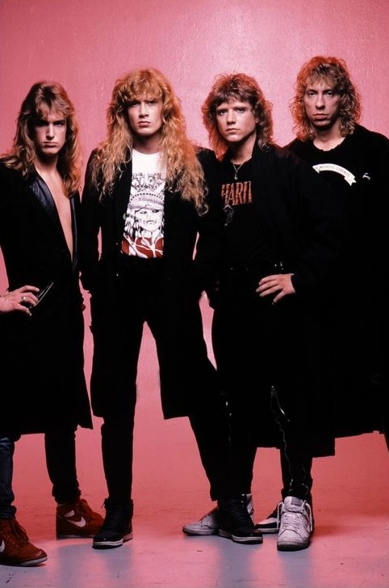
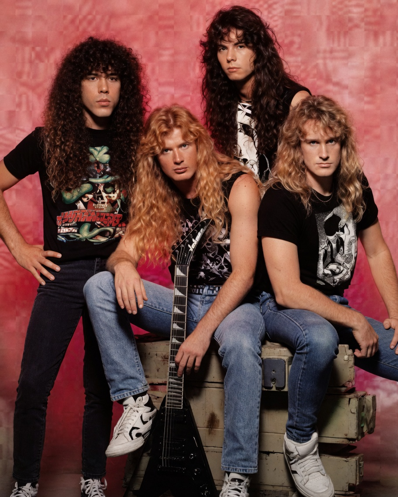
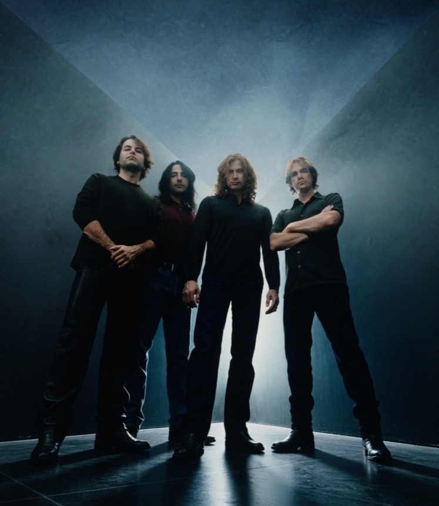
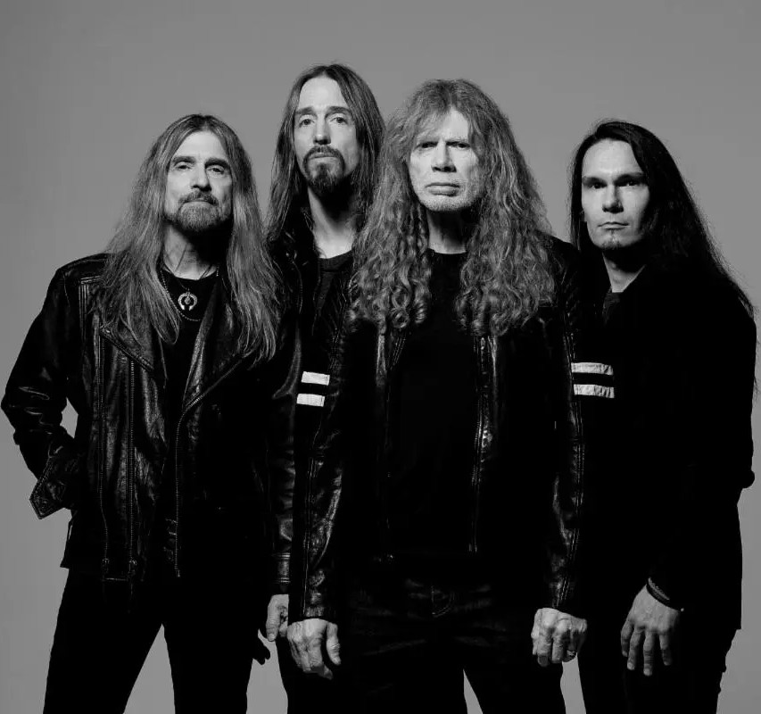

Dave Mustaine fue expulsado de Metallica en abril de 1983 (justo antes de grabar Kill 'Em All). Amargado y con ganas de revancha, juró formar una banda "más rápida y pesada que cualquiera". En Los Ángeles, reclutó rápidamente al bajista David Ellefson. Después de varios nombres y miembros temporales (incluyendo una breve etapa como Fallen Angels), la banda se llamó Megadeth (inspirado en una canción de Mustaine sobre la destrucción nuclear).
Los primeros años fueron de supervivencia extrema: homelessness, hambre y mucho abuso de drogas y alcohol. La formación inicial se estabilizó con Chris Poland (guitarra) y Gar Samuelson (batería). En 1985 lanzaron su debut Killing Is My Business... and Business Is Good! con un presupuesto muy bajo (parte del cual se gastó en drogas). El álbum es crudo, técnico y veloz, con influencias de NWOBHM y speed metal. Tuvo buena recepción underground y les permitió firmar con Capitol Records.
¡Bienvenidos a la historia de Megadeth!
Aca contaremos la historia de una de las bandas mas grandes del Trash metal 🤘
Megadeth es una de las bandas más influyentes del thrash metal, parte del "Big Four" junto a Metallica, Slayer y Anthrax. Fundada por Dave Mustaine, ha pasado por innumerables cambios de formación (Mustaine es el único miembro constante), adicciones, disputas, éxitos comerciales y altibajos creativos a lo largo de más de 40 años.
Inicios (1983-1985): La venganza de Mustaine y los primeros pasos

Época Dorada (1986-1994): El pico creativo y comercial
Esta es considerada la era clásica y más aclamada. Con la banda ya en una major, lanzaron discos icónicos y alcanzaron fama mundial.
- 1986: Peace Sells... but Who's Buying? — Su gran breakthrough. Clásicos como "Peace Sells", "Wake Up Dead" o "The Conjuring". Consolidó su imagen con videos en MTV y letras sarcásticas sobre política y sociedad.
- 1988: So Far, So Good... So What! — Grabado en medio de problemas de adicciones y tensiones. Incluye "In My Darkest Hour" (dedicada a Cliff Burton). La producción fue complicada, pero mantuvo el nivel técnico.
- 1990: Rust in Peace — Considerado por muchos su obra maestra. Con la formación clásica: Mustaine, Ellefson, Marty Friedman (guitarra, incorporado en 1990) y Nick Menza (batería). Temas complejos, virtuosismo extremo y letras sobre ovnis, política y guerra ("Holy Wars... The Punishment Due", "Hangar 18", título track). Platino y aclamación total.
- 1992: Countdown to Extinction — Su mayor éxito comercial (multiplatino). Más accesible pero potente, con hits como "Symphony of Destruction" y "Sweating Bullets". Los alcanzó en la cima de las listas.
- 1994: Youthanasia — Grabado en Nashville con un sonido más moderno. Todavía fuerte, pero ya mostraba algunos cambios.
Esta era define el "clásico" Megadeth: thrash técnico, solos memorables de Friedman y Menza, y Mustaine en su mejor momento compositivo. Vendieron millones y giraron por el mundo.

Época Oscura (mediados de los 90s - principios de 2000s): Declive, inestabilidad y disolución
A partir de mediados de los 90, la banda entró en turbulencias. El grunge y el nu metal desplazaron al thrash tradicional.
- 1997: Cryptic Writings y 1999: Risk — Experimentación con sonidos más alternativos/rockeros (influencia de productores como Dann Huff). Risk fue muy criticado por alejarse demasiado del thrash (aunque tiene algunos momentos rescatables). Marty Friedman abandonó en 1998.
- Cambios constantes de miembros: Nick Menza salió, entró Jimmy DeGrasso. David Ellefson también tuvo altibajos.
- 2000-2001: The World Needs a Hero — Intento de regreso al sonido clásico, pero sin el mismo impacto.
- En 2002, Mustaine sufrió una grave lesión en el brazo (neuropatía radial) que le impedía tocar. Anunció la disolución de la banda. Además, Ellefson demandó a Mustaine por temas financieros, lo que empeoró todo.
Fue una etapa de declive creativo, adicciones recurrentes, críticas de fans y line-ups inestables. Megadeth parecía acabado.

Resurgimiento (2004-presente): Regreso, estabilidad relativa y legado
Mustaine se recuperó, se rehabilitó y reformó la banda en 2004 sin Ellefson inicialmente.
- 2004: The System Has Failed — Regreso fuerte con un sonido más thrash. Gira exitosa.
- 2007: United Abominations — Buen recibimiento.
- 2009-2010: Ellefson regresó. 2011: Th1rt3en y 2013: Super Collider — Mixtos, pero mantuvieron actividad.
- 2015-2016: Dystopia — Gran regreso crítico y comercial. Ganó un Grammy por "Dystopia". Con Kiko Loureiro (guitarra) y Dirk Verbeuren (batería), sonaba fresco y potente.
- Años siguientes: Giras masivas (incluyendo Big 4 reunidos), The Sick, the Dying... and the Dead! (2022).
- En 2021 Ellefson salió nuevamente (acusaciones de misconduct). Teemu Mäntysaari reemplazó a Loureiro (quien se fue por temas familiares) en 2023.
En 2026 lanzaron su álbum final Megadeth, cerrando el círculo tras más de 40 años. Mustaine ha superado cáncer de garganta, cirugías y problemas de salud, pero la banda sigue activa en giras.

A pesar de los dramas, Megadeth influyó enormemente en el metal técnico y thrash. Mustaine es un riff master incansable, y álbumes como Rust in Peace y Peace Sells son eternos. La banda demostró resiliencia legendaria 🤘